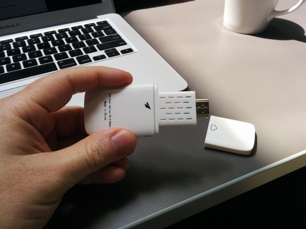

搶先取得開發者電視棒
首款搭載 Firefox OS 的 HDMI 電視棒 ─「Matchstick」已經來了！我們希望能匯集大家的力量為這款新裝置開發 App。
背景
Matchstick 是由具備 Boot to Gecko、XBMC、Boxee 等豐富經驗的工程師團隊打造而成。在 Google 發表了「Chromecast」之後，我們高度期待其所帶來的可能性。但最後看到該款裝置仍未能達到大家所希望的最終功能 ─ 可隨時隨地於任何高畫質 (HD) 螢幕上提供各式影音內容，讓我們不免感到失望。
為了打造更好、更開放的裝置，我們選用的作業系統必須足以孕育高適應性的開放源碼平台 (也就是 Matchstick)。可堪此任的作業系統就是 Firefox OS，同時也讓我們得以翻越目前既有生態系統的高牆，而能開始免費建構我們的第一支電視棒。
Matchstick 與 Firefox OS 整合而成完全開放的平台，且軟、硬體皆然。不論是影片或遊戲，開發者都能自由探索相關內容與 App，並直接帶到自己家的客廳中享受。沒錯！就是開發者！現在開放的 SDK 可讓你打造個人化的串流與互動經驗，而不再需經過他人的審查與許可。
開發 Matchstick 的 App
我們現已開放完整的開發者套件，讓你能取得 Matchstick 開發作業的所有必要資源。另將於專案啟動時一併支援 Firefox OS。我們也期待能將電視相關的 App 提交到 Firefox OS Marketplace 之上。而目前完整函式庫所提供的 API，可供開發 Android 與 iOS 的推送端 (Sender) App，以及可相容於 Matchstick Receiver 的接收端 (Receiver) App。
剛剛提到「Matchsticks 的 App」，即包含了推送端與接收端 App。你可透過推送端 API 啟動自己的 Firefox OS、Android、iOS 裝置，進而找到Matchstick 電視棒，再溝通接收端 App。要將 API 嵌入現有 App，或建立新的推送端 App 都不難。請參照我們已隨附於 SDK 內的範例程式碼。
Matchstick 的推送端 App 一般均依照下列執行流程：
- 掃描 Matchstick
只要 Matchstick 裝置使用的 Wi-Fi 網路與推送端裝置相同，就可交由推送端 App 進行搜尋。掃描作業將友善顯示名稱、型號、圖示、製造商，以及裝置的 IP 位址。使用者可於完整清單上選擇所需的目標裝置。
- 連上 Matchstick
推送端與接收端之間，我們現已同時支援 TLS 與 NON-TLS 的通訊方式。
- 啟動接收端 App
推送端隨即開始溝通目標裝置，並透過 HTML5 接收端 App 的網址，甚或是 Chromecast App ID 而啟動接收端 App。
- 建立訊息通道
在啟動接收端 App 之後，Matchstick 隨即於推送端與接收端之間建立訊息通道。除了所有 Matchsticks App 與 Chromecast App 常見的媒體控制頻道之外，開發者亦可建立自己所需的 App 專屬頻道，以傳送給 App 任何必要的客製化資料。
接收端 App 是由 HTML5、CSS、Javascript 所組成，將載入至「Receiver container」(屬於 Firefox OS 的 Certified App)。如果要使用 Matchstick 的接收端 API，則只要將 fling_receiver.js 加入自己的 App 即可。
以下提供簡易視訊接收端 App 的範例：
<!DOCTYPE html>
<html>
<head>
<title>Example simplest receiver</title>
<meta charset="UTF-8">
<!--(need) include matchstick receiver sdk-->
<script src="//fling.matchstick.tv/sdk/libs/receiver/2.0.0/fling_receiver.js"></script>
</head>
<body>
<!--(need) Give a video tag-->
<video id="media"></video>
<script>
// (need) Get video element
window.mediaElement = document.getElementById("media");
// (need) For media applications, override/provide any event listeners on the MediaManager.
window.mediaManager = new fling.receiver.MediaManager(window.mediaElement);
// (need) Get and hold the provided instance of the FlingReceiverManager.
// Override/provide any event listeners on the FlingReceiverManager.
window.flingReceiverManager = fling.receiver.FlingReceiverManager.getInstance();
// (need) Call start on the FlingReceiverManager to indicate the receiver application is ready to receive messages.
window.flingReceiverManager.start();
</script>
</body>
</html>
1234567891011121314151617181920212223242526
<!DOCTYPE html><html> <head> <title>Example simplest receiver</title> <meta charset="UTF-8"> <!--(need) include matchstick receiver sdk--> <script src="//fling.matchstick.tv/sdk/libs/receiver/2.0.0/fling_receiver.js"></script> </head> <body> <!--(need) Give a video tag--> <video id="media"></video> <script> // (need) Get video element window.mediaElement = document.getElementById("media"); // (need) For media applications, override/provide any event listeners on the MediaManager. window.mediaManager = new fling.receiver.MediaManager(window.mediaElement); // (need) Get and hold the provided instance of the FlingReceiverManager. // Override/provide any event listeners on the FlingReceiverManager. window.flingReceiverManager = fling.receiver.FlingReceiverManager.getInstance(); // (need) Call start on the FlingReceiverManager to indicate the receiver application is ready to receive messages. window.flingReceiverManager.start(); </script> </body></html>
放送 Matchstick 以徵求 App
與其依賴模擬器，我們更希望開發者能實際擁有 Matchstick 的原型機，並立刻開始開發作業。只要開發者想針對 FirefoxOS 開發或移植 Matchstick 可用的App，都歡迎透過「Matchsticks for Apps」企劃來申請免費的開發者預覽裝置。
一如 Mozilla 所發起的「Phones-for-Apps」企劃。只要開發者已經建構出 Firefox OS、Chrome、Android、iOS，甚至 Chromecast 的 App，都能再度投入我們的「Matchsticks for Apps」企劃！讓我們將自己的視界帶進大螢幕吧！

Matchstick 的開發者版本 (由技術傳教士 Christian Heilmann 所攝)
我們亦正尋找著酷炫的想法、影音內容、新視訊頻道，也歡迎遊戲、工具、圖/相片、公用程式，甚至使用者介面 (UI) 的佈景主題。如果你正打算為 Matchstick 開發 App 或進行有趣的事情，請立刻分享自己的計畫讓我們知道，就能獲得電視棒並儘快著手開發。
申請 Matchstick 的資格：
- 想針對大螢幕電視開發 App
- 已開發過 Web App 或行動 App，想進一步延伸到大螢幕之上
- 已是 HDMI Dongle 的開發者，想打造自己的 Matchstick
- 已是 Chromecast 開發者，想將 App 移植到開放平台之上
- 就是你了！
將於 11 月登場的 Matchstick 工作坊
我們正規劃 Matchstick 的 Firefox OS App 工作坊，將於 11 月 18日 (星期二) 讓受邀參加的開發者齊聚 Mozilla 的舊金山辦公室。現已開放報名表格，歡迎符合資格的開發者申請。
如果你離舊金山很遠，也不用擔心。我們也在規劃多個 App 工作坊，很快就會通知各位熱血的開發者！
祝開發愉快！
原文連結：Matchstick Brings Firefox OS to Your HDTV: Be the First to get a Developer Stick